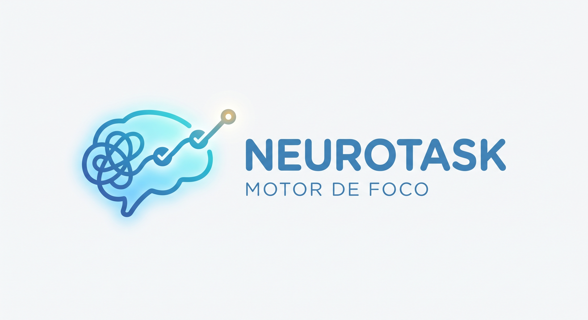

NeuroTask
Cero carga cognitiva. Foco puro.
Volcá tus ideas libremente
Hacé un Brain Dump por texto o voz sin preocuparte por fechas, categorías o prioridades.
¡Bienvenido a NeuroTask!
Ingresá para desarmar la sobrecarga mental

NEUROTASK
MOTOR DE FOCO
Transformá el caos de ideas en un camino lógico y sereno.
Tocá el cerebrito para iniciar tu Brain Dump
¿Qué ronda por tu cabeza?
Escribí o dictá libremente. El sistema descompondrá el camino lógico.
Ordenando la secuencia lógica
Analizando grafo acíclico dirigido...
Testear endpoints del backend en Postman
Verificar respuestas 200 OK y estructurar payloads JSON requeridos.
¡Objetivo Cumplido!
Completaste todos los nodos del camino lógico sin sobrecarga sensorial ni parálisis por análisis.
Perfil de Usuario
Usuario NeuroTask
🏆 Nivel 3 — Maestro del FocoHas desbloqueado trofeos por mantener la calma y completar micro-pasos.
Configuración
Descompresión y Rescate Cognitivo
Elegí cómo querés continuar sin culpas ni presiones.
Mapa del Grafo (Tus ideas seguras)
Secuencia topológica calculada para hoy.